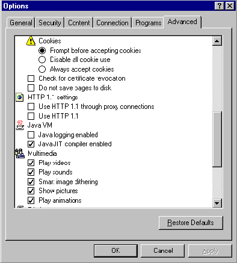

|
| ||
|
| ||
October 10, 1997
Using Internet Explorer 4.0 Preview 2 to retrieve an Active Server Pages (ASP) page can cause your machine to stop responding. This happens because Internet Explorer 4.0 Preview 2 has a bug in its chunked transfer code that implements version 1.1 of the HTTP protocol.
The bug will be fixed for the final release of Internet Explorer 4.0 that ships with the final version of Internet Information Server (IIS) 4.0. You can download the final release of Internet Explorer 4.0  now and experience no further problems.
now and experience no further problems.
Anyone with the configuration of Internet Explorer Preview 2 and the beta of IIS 4.0 can easily apply the interim workaround outlined below:

Figure 1. HTTP 1.1 settings
If you'd like to learn more about improving Web site performance using the HTTP 1.1 protocol, the World Wide Web Consortium (W3C)  is the international industry consortium founded to develop common protocols for the evolution of the World Wide Web. Its Web site contains a good discussion
is the international industry consortium founded to develop common protocols for the evolution of the World Wide Web. Its Web site contains a good discussion  of improving performance using the HTTP 1.1 protocol, Cascading Style Sheets (CSS), and the newest graphics format, Portable Network Graphics (PNG).
of improving performance using the HTTP 1.1 protocol, Cascading Style Sheets (CSS), and the newest graphics format, Portable Network Graphics (PNG).
Did you find this material useful? Gripes? Compliments? Suggestions for other articles? Write us!
© 1999 Microsoft Corporation. All rights reserved. Terms of use.